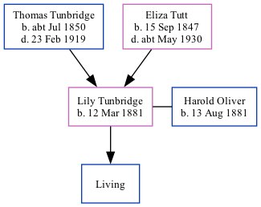

Lily Oliver (née Tunbridge) 1881 -
[ Home ] | [ Calendar ] | [ Surnames Index ] | [ Family History ]A post office clerk and the 2nd of 5 children of Thomas Tunbridge (a dairyman) and Eliza Tutt (a general servant), Lily Tunbridge, the first cousin twice-removed on the father's side of <a href="I1.html">Nigel Horne</a>, was born in Hougham, Kent, England on Mar 12, 1881<span class="citation">1,2,3,4</span> and. She married Harold Oliver (a railroad porter with whom she had 1 surviving child) Christ Church in Hougham on Jun 8, 1908<span class="citation">5</span>.</p><p>Throughout her life, Lily lived in several places: at her birthplace in 1881<span class="citation">1</span> and on Apr 5, 1891<span class="citation">6</span>; on 5 Eaton Road, Dover, Kent, England on Mar 31, 1901<span class="citation">7</span>; at 22 Clarendon Street in Dover on Apr 2, 1911<span class="citation">8</span>; and at 11 Clarendon Street in Dover on Sep 29, 1939<span class="citation">4</span>.
Parents
- Thomas was born c. Jul 1850
- Eliza was born on Sep 15, 1847
Citations
- 1881 England Census Online publication - Provo, UT, USA: The Generations Network, Inc., 2004. 1881 British Isles Census Index provided by The Church of Jesus Christ of Latter-day Saints © Copyright 1999 Intellectual Reserve, Inc. All rights reserved. All use is subject to the (Relation to Head of House: Daughter)
- 1891 England Census Online publication - Provo, UT, USA: The Generations Network, Inc., 2005.Original data - Census Returns of England and Wales, 1891. Kew, Surrey, England: The National Archives of the UK (TNA): Public Record Office (PRO), 1891. Data imaged from The National
- 1901 England Census Online publication - Provo, UT, USA: The Generations Network, Inc., 2005.Original data - Census Returns of England and Wales, 1901. Kew, Surrey, England: The National Archives of the UK (TNA): Public Record Office (PRO), 1901. Data imaged from the National
- 1939 Register - Findmypast (was the wife of the head of the household)
- England & Wales marriages 1837-2008 - Findmypast
- 1891 England, Wales & Scotland Census - Findmypast (was age 10 and the daughter of the head of the household)
- 1901 England, Wales & Scotland Census - Findmypast (was age 20 and the daughter of the head of the household)
- 1911 Census for England & Wales - Findmypast (was age 30 and the wife of the head of the household)
Media
England & Wales births 1837-2006 - BMD/B/1881/2/AZ/000581/260
England & Wales marriages 1837-2008 - BMD/M/1908/2/AZ/000397/001
Kent, Canterbury Archdeaconry marriages 1538-1928 - GBPRS/CANT/M/97058715/2
1939 Register Transcription - TNA-R39-1709-1709A-025-37
1911 Census for England & Wales - GBC/1911/RG14/04598/0227/2
1901 England, Wales & Scotland Census - GBC/1901/0004891857
1891 England, Wales & Scotland Census - GBC/1891/0005982760
Family Tree
Generated by Ged2Site. Last updated on Jul 20, 2025